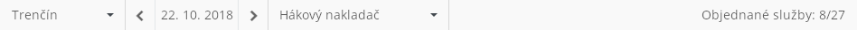

Stručný popis
Nástrojová lišta slouží k nastavení parametrů pro plánování Denních výkonů.
Uživatelské rozhraní
Rozložení
Drátový diagram

Poznámka: Drátový diagram je ilustrativní, nemusí v něm být zobrazeny všechny obsažené ovládací prvky.
Přehled UI komponent
| Pořadí | Komponenta | Nadpis | Typ komponenty | Příklad hodnoty | Hodnota | Výchozí hodnota | Formát | Zpřístupněná | Viditelná | Chování | Validace | Poznámka |
|---|---|---|---|---|---|---|---|---|---|---|---|---|
| 1 | Výběr provozovny | – | ComboBox | Trenčín | Entita Provozovna. Dostupné jsou takové Provozovny, které splňují zároveň všechny uvedené podmínky:
Výchozí hodnota je první Provozovna, na kterou má daný Uživatel právo. | První načtená Provozovna. | Vždy | Vždy | Změna parametrů plánování | – | Možnost nevybráno není k dispozici. | |
| 2 | Přesun na předchozí den | – | Button
| – | – | – | – | Vždy | Vždy | Provede změnu nastavení dne plánování – posune zpět o 1 den. | – | – |
| 3 | Výběr dne plánování | – | Button | 22. 10. 2018 | Datum nastavené Systémem či Uživatelem. | Dnešní datum | Datum | Vždy | Vždy | Změna parametrů plánování | – | Vždy je nastaveno datum. |
| 4 | Přesun na následující den | – | Button
| – | – | – | – | Vždy | Vždy | Provede změnu nastavení dne plánování – posune dopředu o 1 den. | – | – |
| 5 | Výběr typu dopravy | – | ComboBox | Hákový nakladač | Entita Typ dopravy. Dostupné jsou takové Typy dopravy obsažené v rámci systémového číselníku, u kterých je hodnota atributu Je k dispozici nastavena na TRUE. | Hákový nakladač | Vždy | Vždy | Změna parametrů plánování | – | Možnost nevybráno není k dispozici. | |
| 6 | Aktualizovat denní výkony | – | Button
| – | – | – | – | Vždy | Pokud jsou splněny vstupní podmínky odkazovaného chování. | Spustí chování uvedené v rámci Provést kontrolu aktuálnosti denních výkonů. Po najetí myší na tlačítko dojde k zobrazení bublinkové nápovědy s textem uvedeným ve sloupci Komponenta. | – | Uvedené chování není možné spustit pro datum v minulosti. Společné zobrazení s komponentou 7 by nemělo nastat. |
| 7 | Generovat denní výkony mimo plánované období | – | Button
| – | – | – | – | Vždy | Pokud jsou splněny vstupní podmínky odkazovaného chování. | Spustí chování uvedené v rámci Generovat denní výkony mimo plánované období. Po najetí myší na tlačítko dojde k zobrazení bublinkové nápovědy s textem uvedeným ve sloupci Komponenta. | – | Uvedené chování není možné spustit pro datum v minulosti. Společné zobrazení s komponentou 6 by nemělo nastat. |
| 8 | Počet objednaných služeb | – | Label | Objednané služby: 8/27 | Výsledná hodnota je skládána ze dvou hodnot, jak je uvedeno ve sloupci Formát:
| – | Objednané služby: | – | Vždy | – | – | Zobrazuje aktuální informace, reaguje tedy jak na Změnu parametrů plánování, tak například na nastavení filtrů v rámci přehledu objednaných služeb. |
Chování
Změna parametrů plánování
Po změně jakéhokoliv z parametrů, který je možné v nástrojové liště nastavit, dojde k načtení celé obrazovky pro plánování denních výkonů. Vliv parametrů nástrojové lišty je popsán v jednotlivých ucelených částech zmíněné obrazovky.
Provést kontrolu aktuálnosti denních výkonů
Vstupní podmínky
- Splněny musí být všechny dále uvedené podmínky zároveň.
- Jsou splněny vstupní podmínky pro 202UC07: Generovat denní výkony pro plánované období.
- Datum nastavené v nástrojové liště (komponenta 3) je větší nebo rovno dnešnímu datu.
- Pokud datum nastavené v nástrojové liště (komponenta 3) zasahuje mimo plánované období – je větší než součet dnešního data a délky plánovaného období (generateDailyRoutesHorizon, viz Konfigurační hodnoty) – musí být navíc splněny všechny dále uvedené podmínky zároveň:
- Musí existovat alespoň jeden Denní výkon, který splňuje všechnu dále uvedené podmínky zároveň (v opačném případě je volán 202UC08: Generovat denní výkony mimo plánované období):
- Hodnota atributu Datum realizace datu nastavenému v nástrojové liště (komponenta 3).
- Hodnota atributu Provozovna odpovídá Provozovně nastavené v nástrojové liště (komponenta 1).
- Musí existovat alespoň jeden Denní výkon, který splňuje všechnu dále uvedené podmínky zároveň (v opačném případě je volán 202UC08: Generovat denní výkony mimo plánované období):
Tok událostí
- Systém zobrazí modální okno s dotazem, zda si uživatel opravdu přeje provést tuto akci (MSG_CONF_CANCEL_UPDATE_DAILY_ROUTES, Systémové hlášky).
- Pokud uživatel zruší provedení akce:
- Systém zavře modální okno s dotazem.
- Přechod na krok 8.
- Uživatel potvrdí provedení akce.
- Systém zavře modální okno s dotazem.
- Systém odešle požadavek na generování Denních výkonů pro plánované období – spustí 202UC07: Generovat denní výkony pro plánované období, na vstup jsou předány následující informace:
Datum od: Datum nastavené v nástrojové liště (komponenta 3).
Datum do: Datum nastavené v nástrojové liště (komponenta 3).
- Pokud proběhne generování Denních výkonů pro plánované období v pořádku:
- Systém zobrazí modální okno s informací, že akce proběhla v pořádku (MSG_CONF_UPDATE_DAILY_ROUTES_FINISHED, Systémové hlášky).
- Uživatel potvrdí zobrazenou informaci.
- Systém zavře modální okno s dotazem.
- Přechod na krok 8.
- Jinak dojde k provedení následujících kroků:
- Systém zobrazí modální okno s informací, že akce nebyla dokončena v pořádku (systémová hláška je získána na výstupu 202UC07: Generovat denní výkony pro plánované období).
- Uživatel potvrdí zobrazenou informaci.
- Systém zavře modální okno s dotazem.
- Přechod na krok 8.
- Systém načte aktuální data pro obrazovku.
Výstupní podmínky
- Volaný případ užití proběhl v pořádku.
Generovat denní výkony mimo plánované období
Vstupní podmínky
- Jsou splněny vstupní podmínky pro 202UC08: Generovat denní výkony mimo plánované období.
Tok událostí
- Systém odešle požadavek na generování Denních výkonů mimo plánované období – spustí 202UC08: Generovat denní výkony mimo plánované období, na vstup jsou předány následující informace:
Datum: Datum nastavené v nástrojové liště (komponenta 3).
Provozovna: Provozovna nastavená v nástrojové liště (komponenta 1).
- Pokud proběhne generování Denních výkonů mimo plánované období v pořádku:
- Systém zobrazí modální okno s informací, že akce proběhla v pořádku (MSG_CONF_UPDATE_DAILY_ROUTES_FINISHED, Systémové hlášky).
- Uživatel potvrdí zobrazenou informaci.
- Systém zavře modální okno s dotazem.
- Přechod na krok 4.
- Jinak dojde k provedení následujících kroků:
- Systém zobrazí modální okno s informací, že akce nebyla dokončena v pořádku (systémová hláška odpovídající chyby vyvolané v rámci 202UC07: Generovat denní výkony pro plánované období).
- Uživatel potvrdí zobrazenou informaci.
- Systém zavře modální okno s dotazem.
- Přechod na krok 4.
- Systém načte aktuální data pro obrazovku.
Výstupní podmínky
- Volaný případ užití proběhl v pořádku.
Grafický návrh

Revize
31. 8. 2023: Tomáš Nadrchal
| Odkaz | Stručný popis změny/doplnění |
|---|---|
| Rozložení | Revize dostupných provozoven (naznačeno modře). |
3. 3. 2023: Tomáš Nadrchal
| Odkaz | Stručný popis změny/doplnění |
|---|---|
| Rozložení | Revize dostupných typů dopravy (naznačeno modře). |
7. 4. 2021: Tomáš Nadrchal
| Odkaz | Stručný popis změny/doplnění |
|---|---|
| Provést kontrolu aktuálnosti denních výkonů | Změněna formulace vstupní podmínky (naznačeno růžově). |
31. 1. 2021: Tomáš Nadrchal
| Odkaz | Stručný popis změny/doplnění |
|---|---|
| Rozložení | Provedena revize tlačítek nástrojové lišty (naznačeno modře). |
| Provést kontrolu aktuálnosti denních výkonů | Doplněno chování pro provádění kontroly aktuálnosti denních výkonů (naznačeno modře). |
| Generovat denní výkony mimo plánované období | Doplněno chování pro generování denních výkonů mimo plánované období (naznačeno modře). |
18. 11. 2019: Tomáš Nadrchal
| Odkaz | Stručný popis změny/doplnění |
|---|---|
| Rozložení | Doplněno tlačítko pro spuštění (naznačeno modře). |
23. 9. 2019: Tomáš Nadrchal
| Odkaz | Stručný popis změny/doplnění |
|---|---|
| Rozložení | Doplněn počet Objednaných služeb načtených v rámci obrazovky (naznačeno modře). |
| Grafický návrh | Aktualizován grafický návrh. |
21. 6. 2019: Tomáš Nadrchal
| Odkaz | Stručný popis změny/doplnění |
|---|---|
| Rozložení | Aktualizován popis dostupných Provozoven v nástrojové liště (komponenta 1, naznačeno modře). |
14. 1. 2019: Tomáš Nadrchal
| Odkaz | Stručný popis změny/doplnění |
|---|---|
| Přehled UI komponent | Možnost Nevybráno není dostupná ani při výběru Provozovny, ani při výběru Typu dopravy. |